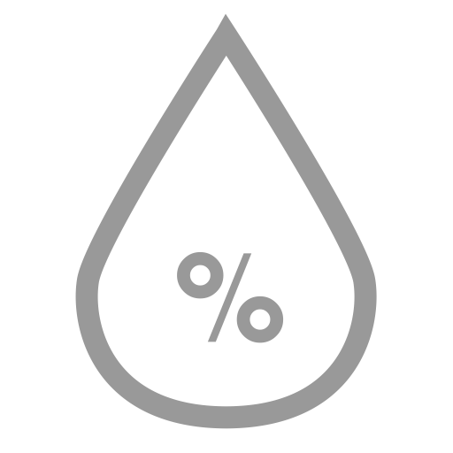
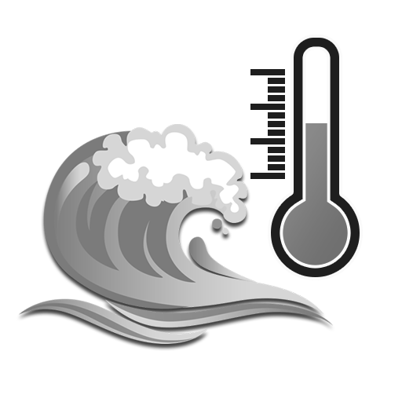

Paride Martinelli
Modifica
Log Out
4
Temperatura
3 minuti fa
La temperatura ha superato i 35 gradi, la consigliamo di recarsi in zone più fresche

Umidità
3 minuti fa
Umidità molto elevata, recarsi in zone meno umide
Raggi UV
3 minuti fa
Sei stato troppo tempo al sole, la quantità di raggi UV che il sole ha trasmesso sul tuo corpo è troppo elevata

Temperatura del mare
3 minuti fa
Mare molto freddo, si consiglia di indossare una muta
Vedi tutte...
Line graph
Sessions